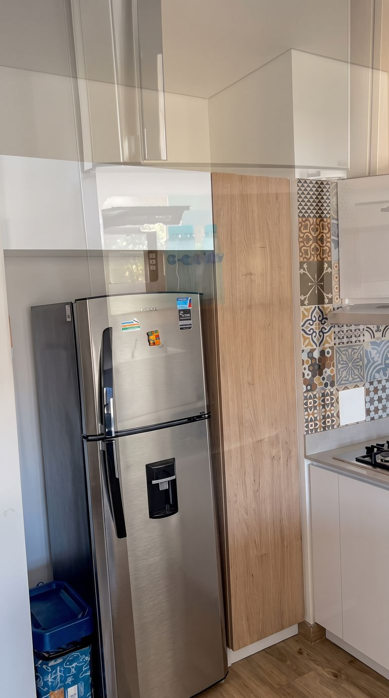

Kitchen
Equipped for simple meals
There is a refrigerator, stove, microwave, cookware, dishes, glasses, and utensils. Cooking basics include pots and pans, oil, salt and pepper. A coffee maker is in the apartment too.

Placeholder · Kitchen